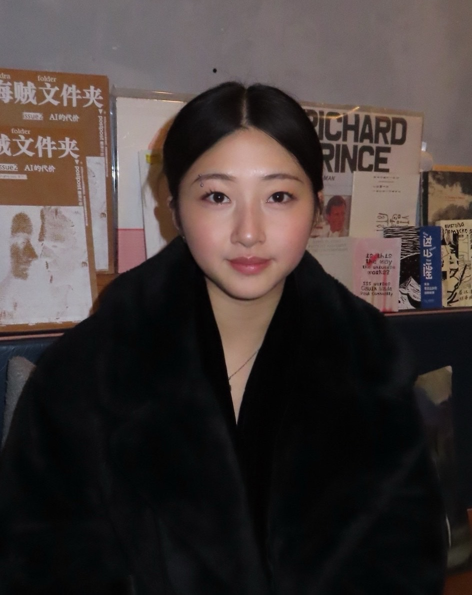

About
I’m Jennifer Niu — a designer and developer exploring the space
between art and technology. My work blends visual design,
interactive systems, and computational structure, shaped by a
focus on clarity, texture, and form.
I’m interested in how digital environments hold memory, how interfaces influence perception, and how simplicity can create emotional impact. I move fluidly between 3D, web, graphics, and experimental visuals, building work that is minimal, intentional, and exploratory.
I’m interested in how digital environments hold memory, how interfaces influence perception, and how simplicity can create emotional impact. I move fluidly between 3D, web, graphics, and experimental visuals, building work that is minimal, intentional, and exploratory.
